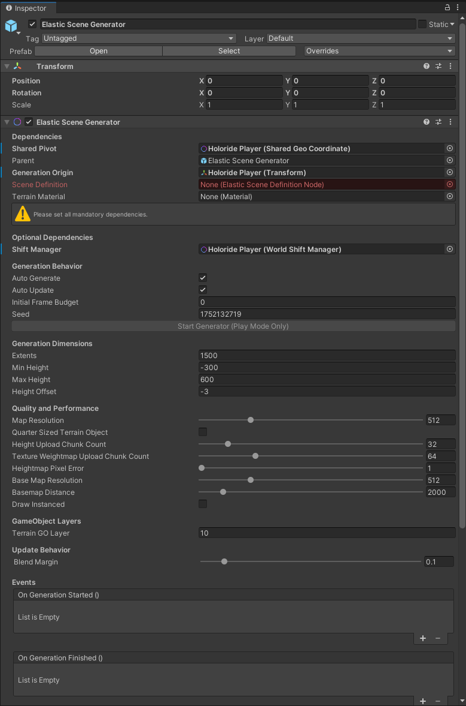

The Elastic Scene Generator
Besides the holoride Player the Elastic Scene Generator is one of the two key components enabling a full elastic experience. For easy integration, the Elastic SDK provides a Elastic Scene Generator Prefab for Unity. The Elastic Scene Generator visualizes map data and node information from the Elastic Graph. By referencing a Scene Definition from an Elastic Graph as well as a Terrain Material on the generator's component, the user enables it to procedurally generate a terrain and spawn objects based on the Scene Definition's output data. The generated terrain is based on Unity's terrain implementaion.
Tip
You can create a Elastic Scene Generator game object in Unity's scene hierarchy from the righ-click context menu Create > holoride > Elastic Scene Generator.

- Dependencies
- Shared Pivot - this is the origin of the world over time. In this case, it is the Player Prefab.
- Parent - this is the object which spawned content will be childed to. We use the Elastic Scene Generator game object.
- Generation Origin - this is the center point from which content is spawned. We use the Player Prefab again.
- Scene Definition - this is filled with the output node on the Elastic Graph. It is dragged from the Project window into this reference.
- Terrain Material - if there is a terrain being generated, this is the material which is used.
- Generation Behavior - these booleans allow terrains to be generated automatically or not. The default is true for both options.
- Terrain Dimensions - this is the size of the generated terrain and its extents.
- The default terrain/spawning height is -3. This creates a little visual buffer from 0,0,0.
- Quality and Performance - the terrain settings that are the same and in reference to Unity's native terrain system. To learn more about the terrain system and its settings, check out the official documentation
- GameObject Layers - the layer on which spawned objects will be set to
- Update Behavior - how two terrains are blended together
- Events - allows calling custom events based on generation states